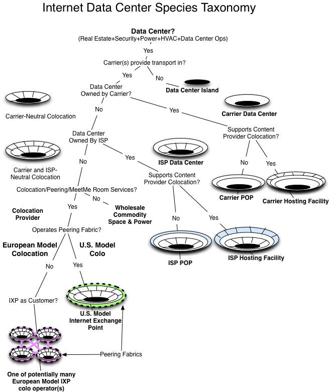

The U.S. vs. European Internet Exchange Point Models
The European IXP Model
The European model IXP is modeled in Figure 12-19.
The European IXP Model has the follow characteristics:
- The European peering community points with pride at the European IXPs as being both carrier and colocation neutral, meaning that participants in Europe can select which of the potential colocation operator providers offers the appropriate combination of services and cost points that they need. They can connect to the IXP from whichever IXP colocation site they like.
- European IXPs don’t usually have customers, they have members. They are often formed as not-for-profit associations (44%) founded by members that are also usually the first ISPs to connect. The other common form of European IXP organization is that of a service offered by an academic or regional development organization (42%). In either case, the focus is on providing mutual value, sharing the costs, and having some degree of community oversight over what they see as their organization. Even when they are not formal associations (e.g., NetNod), they tend to operate as if they were. Many European IXPs also have activities outside the mere operation of the IXP, including political, legal, and community outreach and research activities.

Figure 12-19. The European IXP Model.
Notes from the field.
European Model IXP Blessing and Curse
This association structure for IXPs has proven to be both a blessing and a curse. It helps get the IXP launched and builds a population; since the founding association members share in the benefits and the costs equally, they all can exert some pressure to get additional ISPs into their IXP. However, the “same pricing for all structure” model also limits the use of discriminatory pricing that could otherwise be used to lure in strategically important peers. This ability to drop the costs of peering for the right key peers is especially important during the early stages before an IXP reaches critical mass, and the value of peering there is less than the cost of peering there.
- European IXPs have led the charge on Public Peering traffic volume. These guys are on the bleeding edge pushing over 1 Tbps of peering traffic.
- European colocation providers don’t get recurring revenue for cross-connects. In the early days, ISPs could run their own intra-building cross-connects. Later, a small one-time fee was extracted. Cross-connects in 2011 were primarily inexpensive and one-time expenses in Europe.
- Pricing in Europe for IXP services tends to approximate a cost-based pricing model. This approximation is reflective of the not-for-profit form of the business; if a not-for-profit makes too much profit, its not-for-profit status is in jeopardy. The cost of peering pricing declines, making it easier for others to justify joining the IXP, thereby increasing the economies of scale and allowing the operator to decrease the prices further.
- European IXPs are distinct from the U.S. counterparts also in that they cooperate. There is a long history of European IXPs sharing operations notes, growth trends, additional service offerings, pricing information, traffic statistics, and customer status updates at public Internet operations forums like RIPE, APRICOT, and NANOG. Now let’s compare the U.S. IXPs across the same dimensions.
The U.S. IXP Model
IXPs in the U.S. are largely for-profit commercial operations run by the colocation companies that house them (Figure 12-20).
The U.S. IXP model has several characteristics.
- Commercial IXP companies generally have the ability to apply discriminatory pricing to lure in the right players, meaning a U.S. IXP can offer free colocation space, free switch ports, discounted cross-connect, etc. for ISPs that will help lure in other ISPs into the building.
For example, when Equinix Ashburn was launched and there were no tenants, public debt filings show that WorldCom was incentivized to come in with stock warrants. In Los Angeles the Any2 IXP was free for tenants in 1 Wilshire, and in Miami the NOTA IXP offered free peering ports to all tenants. The ability to incentivize the right ISPs into the IXP is a tool that the U.S. IXPs have and use, whereas the European IXPs have the same posted prices for all.

Figure 12-20. The U.S. IXP model.
- The pricing in the U.S. for IXP services is the price the market will bear. This model is reflective of the commercial for-profit form of the U.S. IXP business. A for-profit company seeks to maximize shareholder value. As a result, U.S. exchange points are priced quite different from the European exchange points counterparts, whose prices are more closely tied to the cost of operations.
- The focus within U.S. IXPs tends to be more towards revenue-generating activities. While there is much peering outreach done here, it is motivated by revenue generation.
- The U.S. IXPs have customers, not members. Customers pay, they don’t vote. Decisions are made by the commercial IXP operator, not by the population. Next, a soft point. You tend to see that U.S. IXPs are more likely to compete with one another than cooperate. The exception to this general rule is when the customer base insists that the different IXPs work together. This situation occurred, for example, when each U.S. IXP started running its own peering forums. The customer base, faced with constant travel to so many peering events, insisted that the IXPs pool resources to run a single group event, which became the Global Peering Forum. It has turned into a singular must-attend event for U.S. peering coordinators who were otherwise splintered across many different events, so everyone won with this evolution.
- The U.S. IXP Public Peering traffic volume is much lower. In the U.S. there is much more Private Peering than Public Peering. The U.S. IXPs are primarily venture capital-backed, purpose-built, secure 100,000-sq.-ft. meet-me rooms facilitating thousands of Private Peering connections.
Table 12-1. The differences between U.S. and European model IXPs.

Notes from the field.
European Operations Meetings are Dainty
I found it interesting that even the way the Internet Operations meetings around the world “feel” is different.
The RIPE meetings, for example, feel more community-based. They focus a lot on sharing information and comparing notes in public. A few “working groups” focus on common problems, and they publish them to share the wisdom beyond the meetings. The U.S. counterpart (NANOG) feels more commercial and conflict-filled, with a greater focus on sponsorship money and the politics of the organization than on sharing experiences.
The coffee breaks feel a bit formal in European meetings. Coffee and tea service has a “queue.” The wait staff ask people in turn if they want coffee or tea. They may add cream and sugar for you. The coffee and hot water for tea are served from an elegant urn.
In the U.S. the coffee breaks involve wheeling in a few tables of 20-gallon self-serve cafeteria-style urns. A plastic container houses the sugar packets and used plastic stirrers – the meeting has a different feel to it.

Figure 12-21. The Taxonomy of Data Centers.
A Couple of Notes about Real Estate for the IXP Operator
Location is critically important as it directly affects the business case for peering, and therefore the likelihood of success as an IXP. At the highest level, IXP operators said that they first decide on the Internet Regions of interest. In the U.S., one of the first thoughts is to build in the “NFL” cities. The thinking is that if this city can support a major football team, then there is likely enough traffic to support an IXP.
Another critically important location issue is the existence of other competing IXPs. I surveyed several dozen ISPs and asked them how many IXPs they would like to have per region.
Half of them answered that they wanted to see only one IXP per region. That way, they could pick up all of the traffic they could there, and wouldn’t have to pay to reach the others that went into a different IXP. Keep the costs of peering down was their attitude. Some also pointed out that they preferred to handle the redundancy themselves through more interconnect points, diverse routing, etc.
The other half of the group said that they wanted to see exactly two IXPs per region for redundancy reasons. They wanted to see two different IXP operators, each hiring a different security guard company, a different hardware vendor for its public switch, a different fuel delivery company that would travel on different paths to refuel the diesel generators, etc.
And nobody wanted to see any more than two IXPs per region. That would “splinter the population” they said, “increasing the total cost of peering for the region.” If there were three or more IXPs in a region, each would probably have some distinct participants. To pick up all regional traffic in such a region, one would need to build into all IXPs at potentially great expense.
The point is, the competitive landscape for IXP operators is a critical factor for real estate selection.
High-Margin Cross-Connects
Another point must be made: To the colocation provider, cross-connects are wonderful high-value and high-margin products.
U.S. colocation providers charge customers for (typically fiber) cross-connects between two parties within their U.S. data centers. Within a cage, customers can of course run their own wires. It is when the wires cross the customer boundary that the colocation provider owns the interconnect and manages the interconnection process. Interconnects have a monthly recurring fee in the U.S.
These cross-connects are estimated to cost about $40 to run. This amount includes the cost of the fiber, the cost of the labor to run the fiber, and even a small cost allocation for the indirect costs of a database in which to store the customer information. There are lots of assumptions here, of course.
But the cost of the cross-connect is immaterial compared to the $300 per month that the U.S. colocation providers charge for cross-connects. The important question is: What is the value of the cross-connect to the participant? How high could the price get?
Let’s compare free peering using a cross-connect against the next-best alternative, purchasing Internet Transit. If one could freely peer 5Gbps over a cross-connect, and the alternative was to purchase 5Gbps of transit at $1/Mbps, colocation providers could charge as much as $5000/month for that cross-connect!
Based on this analysis, the $300/month cross-connect is quite a bargain.
This analysis has a lot of assumptions, but these assumptions are the broad strokes. In both cases (transit and peering) we assume peers and transit providers participate at the colocation center, no increase in equipment costs is incurred, and no incremental labor costs of peering, etc. are incurred. The point is that the value derived from the cross-connect is calculably higher than the price of the cross-connect.
The other comparison that is often made is the cost of a cross-connect compared to the cost of a circuit. Again, the cross-connect is a cost-effective alternative.
The profit on cross-connects is nearly 100%. A colocation provider with 5000 cross-connects generating $250/month yields $1.25M every month. Not a bad business.
It is interesting to observe that in Europe, cross-connects within data centers have always been run either by the tenants of the colocation center or by the colocation providers for a one-time fee of about $200. So when the European ISPs came to the U.S., they were surprised that there were monthly recurring charges for a piece of fiber run between participants.
Some of the European colocation operators I spoke with see Europe adopting the U.S. monthly recurring cost cross-connect model. They thought their customers might revolt. Some European colocation centers have already started owning the cross-connect process, so they seem to be inching along this path towards the U.S. cross-connect model.
Notes from the field.
Bypassing U.S. Monthly Recurring Cross Connect Fees
Since there is a monthly recurring cost for a cross-connect in the U.S., ISPs are incentivized to “cheat” and bypass the system. How do they bypass the system? We learned several methods in the field.
In one example, an ISP realized that its peer was on the floor directly below it. During a midnight installation, the ISP drilled a hole through the concrete floor to run the cable to its peer.
In another example, an ISP paid the IXP technician several hundred dollars under the table to run the fiber without reporting it to the IXP operator.
In a final example, the ISPs leveraged an operations loophole at a colocation facility. In this particular colocation facility, when a cross-connect is ordered it is connected from patch panel to patch panel within the customer cages. When a disconnect order is placed, the cross-connect is simply disconnected from the two patch panels. This scenario allowed customers to order cross-connects, place the disconnect order, and then both parties would plug the two ends back to the patch panel during their next visit to their cage. In some cases, the colocation provider disconnected the fiber and pulled the cross-connect up into the overhead wiring trays. The ISPs would both then fish down the fibers and reconnect them for free cross-connect services.